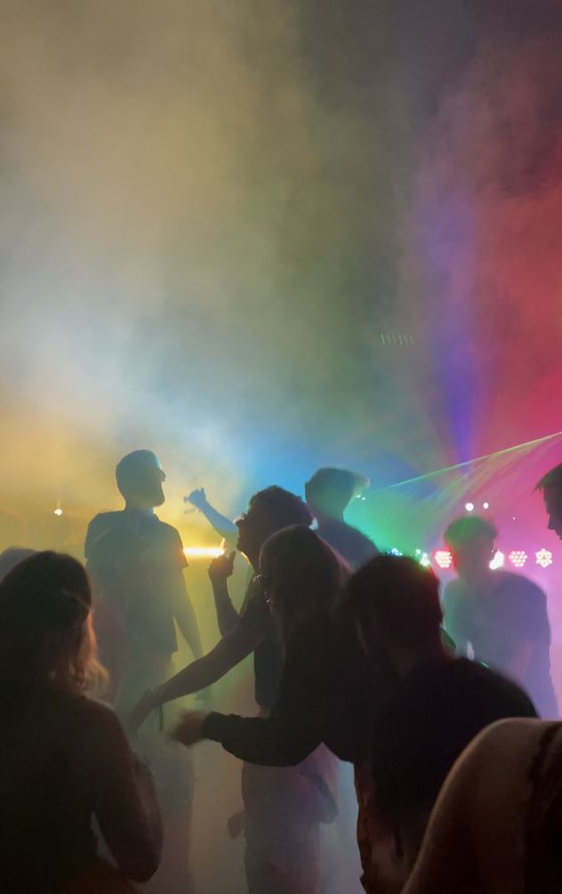
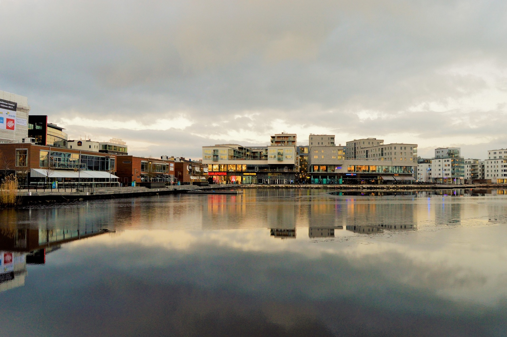

Jönköping is situated in southern Sweden right at the foot of one of
Swedens biggest lakes, Vättern. It is also the 10th largest city in
Sweden according to population.
Activities
Jönköping is also pretty large in area and there are a lot of things to
do in the different parts. There are a lot of nice trails in nature for
those who wants to go out hiking, especially in the outer parts of
Jönköping municipality. And there is also the city life where you have
loads of shopping along the cobbled roads. If you want to combine the
two you can visit one of the city parks, like rådhusparken or
knektaparken. In the summer, the beach right next to Vättern is the
place to be. Vätterstranden is the most popular and it will be
crowded on the sunny days.

Night life
If you are more into partying and the city night life, there are some
clubs in the city center. Some of the most popular ones is Sliver,
Glädje or Twin city which is located right next to Rådhusparken. The
student life in Jönköping is also incredible, there are some cheap
places to go out with student prices as well. Akademien is Jönköping
University's own night club.

Food
There are a lot of nice restaurants in Jönköping city. Some of the most
popular (but also most expensive) are located right next to the water
that is dividing Jönköping into two parts. The beautiful view makes them
worth visiting at least once. One restaurant called Bryggan is
especially appreciated by the inhabitants of Jönköping. If you are on a
budget, there are endless of options as well. Whether it's pizza,
McDonald's, Subway, kebab or a casual sit-down restaurant, you have
plenty of options.
